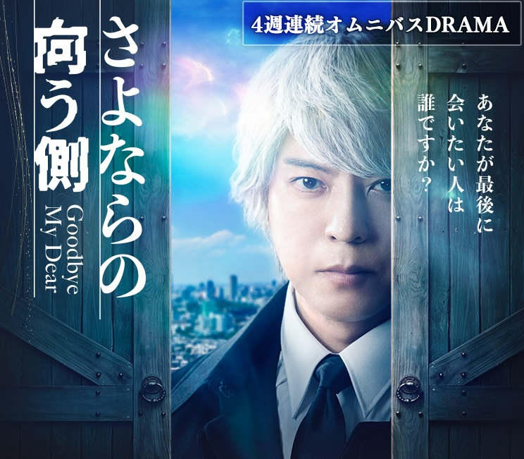

CHRIZ KAYRIKO
DRAMAS

Source: AsianWiki
Episode #
Subtitles
1
HikariRaiders-Sayonara-no-Mukogawa-EP01-1080p-WEB-DL.ass
2
HikariRaiders-Sayonara-no-Mukogawa-EP02-1080p-WEB-DL.ass
3
HikariRaiders-Sayonara-no-Mukogawa-EP03-1080p-WEB-DL.ass
4
HikariRaiders-Sayonara-no-Mukogawa-EP04-1080p-WEB-DL.ass